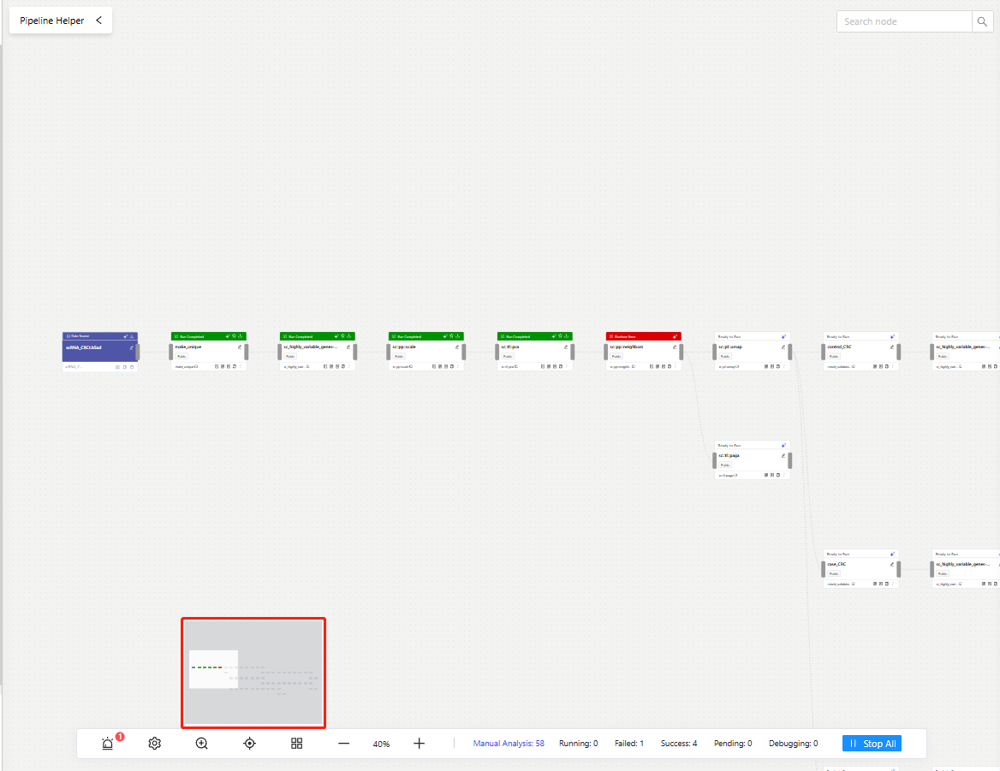
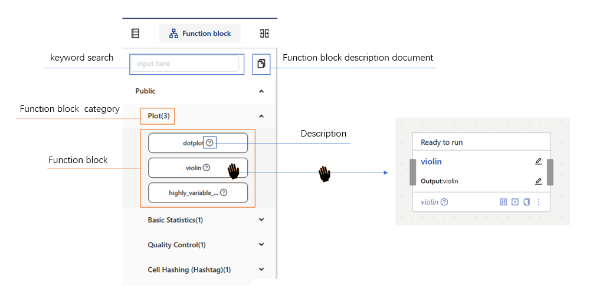
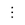
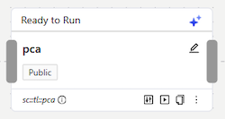
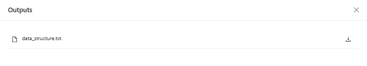
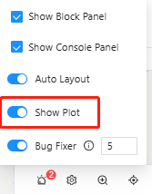
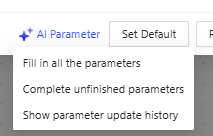
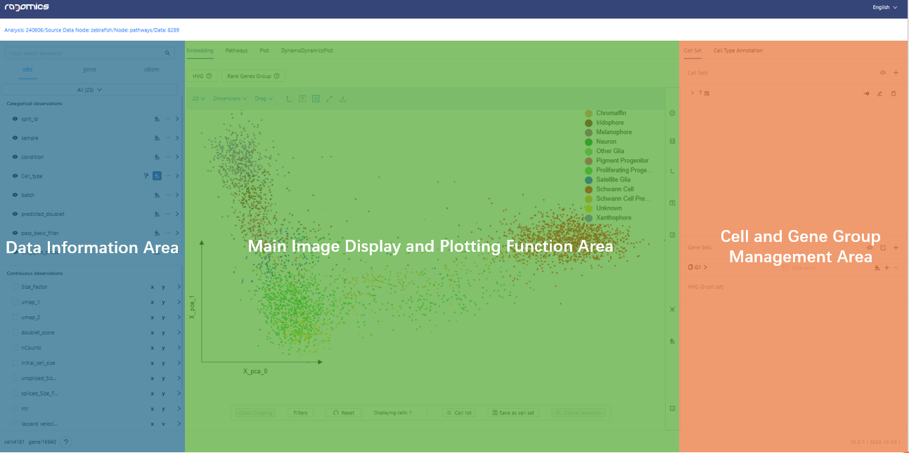
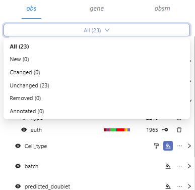

Platform Login and Registration¶
Platform Login¶
On the login page, users can enter their account credentials (mobile number) and password, then click the Log in button to access the platform. If users do not have an account, they can click the Register button to proceed with account registration. In case users forget their password, they can click the Forgot password button to reset password.
Account Registration¶
On the registration page, users need to input their username, password, and mobile number (used as the login account). After entering these details, users can click the Send button to receive and input a mobile verification code. If users do not have an invitation code, they can contact customer service by emailing yuze@raganetwork.com for assistance.
Password Reset¶
On the password reset page, users must enter their mobile number (login account) and click the Send button to receive a mobile verification code. Users then input the verification code along with their new password. Once the information is filled in, they can click the Next step button to proceed to the password reset result page. If the reset is successful, users can click the To login button to return to the login page.
Guest Mode¶
If users do not have a platform account and prefer not to register, they can choose to log in as a guest (Login as a guest). In visitor mode, all editing operations will be disabled. However, guests can still view public analyses or those shared by other users.
Creation and Management of Analysis Tasks¶
Workflow¶
After logging into the homepage, the Workflow tab includes two sections: Analysis Task and Data Source.
In the Analysis Task section, users can create and manage analysis tasks and view Public Analyses at the top of the page to explore examples of analyses provided by Ragomics.
In the <Data Source section, users can import datasets from Public Databases into their accounts or Upload Data from local sources.
Creating an Analysis¶
Once logged in, users can go to the Analysis Task page under the Workflow tab and click the Create New Analysis Task button to create a new analysis task.
In the pop-up form, users must enter a name for the analysis task. While the task description is optional, it helps the Agent module provide more accurate assistance.
Users can choose to enable the With Guidance feature. If enabled, the Pipeline Helper will automatically launch the first time the user accesses the Analysis Panel of the task, helping them quickly select an analysis pipeline tailored to their needs.
Once the task is created, users will be directed to its Analysis Panel.
Managing Analysis Tasks¶
After logging in, users can view and manage previously created analysis tasks in the Workflow - Analysis Task tab. Each analysis task card contains several buttons for task management. Click Open button on the analysis card to enter the Analysis Panel of the selected task.
Collaborator Management Button (): Click to open the Collaborator Management page and invite collaborators to participate in the project analysis.
Edit Button (): Click to edit the task name and description.
Copy Button (): Click to duplicate the current analysis task. Note that the duplicated task will only retain the Data Source and any unexecuted analysis pipelines. Analysis results will not be copied.
Delete Button (): Click to delete the current analysis task. This action is irreversible.
Share Button (): Click to access the sharing page. Users can enable sharing for the task and click the quick copy link below to generate a shareable access URL. Other users can use the link to view the shared analysis task but cannot edit it as guest users.
Collaborator Management¶
When an analysis task requires collaboration with other users, the Collaborator List can be opened.
Click the Add Collaborator () button in the top-left corner to invite collaborators.
Users can assign editing permissions to collaborators as needed.
Once added, the invited collaborator must accept the invitation through the In-app Notifications to access and edit the analysis task.
Public Analyses and Databases¶
Public Analyses¶
Ragomics provides users with a series of completed analysis examples. Users can directly access these Public Analyses to review the analysis process and results. However, users cannot perform any editing actions on these public analyses.
Public Databases¶
On the Workflow - Data Source page, users can explore datasets from public databases:
Click the Show More button to view additional datasets in the public database.
Select an interesting dataset and click the Import button to add it to the user's account database.
Data Upload and Management¶
Data Upload¶
Ragomics offers two methods for uploading data:
Method 1
Navigate to Workflow - Data Source - My Data section.
Click the Upload () button to start the data upload process.
Method 2
In the Analysis Panel, click the Add () button under the Data Source tab on the left sidebar, choose Upload from Device button to begin uploading data directly from your device.

Supported Data Formats for Upload in Ragomics
Ragomics currently supports the following five data formats for upload:
AnnData Upload
Users can add
.h5adfiles by dragging and dropping or clicking the Add () button.Select the corresponding species information and provide a description of the data.
Once the file is selected and all information is filled out, click the Upload () button to start uploading.
When the upload status indicates success , the data upload is complete.
10x Data Upload
Enter the data name, species information, and data description.
Click the Next Step button, then click Add a Sample to create a new sample row.
For multiple samples, add the corresponding number of sample rows.
In each sample row, upload the following three files:
barcodes.tsvgenes.tsvmatrix.mtx
Once all data is uploaded, click the Assemble button to complete the upload process.
Assemble AnnData
Enter species information and data description, then click the Next Step button.
Upload the required files by dragging and dropping or clicking the upload area:
Mandatory Files:
In the central Layers section, upload
X, orunsplicedandsplicedfiles.varobs
Optional Files:
obspobsmvarmvarp
Once all files are uploaded, click the Assemble button to finalize the AnnData assembly.
Click the Complete button to finish the upload process.
FastQ Upload
Select the corresponding species information and provide a description of the data.
Click the Next Step button.
Add FastQ
.zipfiles by dragging and dropping or clicking the central upload area.
Spaceranger Count Upload
Enter the data name, select the corresponding species information, and provide a description of the data.
Click the Next Step button.
Add Spaceranger Count data by dragging and dropping or clicking the upload area.
On the right side of the upload panel, you can find format requirements and mandatory file examples.
Once the data is uploaded, click the Assemble button to complete the data assembly.
Importing Data¶
In the Analysis Panel, users can import data through Add () button under the Data Source tab on the left sidebar. There are three methods for importing data:
1. Importing from Existing Data¶
If users have already uploaded the target data to their account via the data upload feature, they can choose to import it from existing data.
In the import form, select the desired data by checking the boxes on the left.
Click Confirm to import the data from the account into the current analysis task.
Analysis Panel¶
In the Analysis Panel, users can freely perform various analysis operations, such as Data Upload, Importing Data, Function Blocks option, and Analysis Pipeline Assembly. After completing the analysis, users can view the results directly or navigate to the corresponding Visualization Panel to explore the visualized outcomes. Users can choose between manual or Automatic Layout option of the analysis pipeline on the current analysis panel. To switch to another analysis task, users can click the top-left Ragomics () button to return to the homepage.
Automatic Layout¶
Users can manually arrange the nodes of the analysis pipeline or enable an automatic layout feature. By clicking the Settings () button on the bottom toolbar of the analysis panel, users can activate automatic layout in the pop-up options. When enabled, any subsequently connected analysis nodes will be automatically arranged. To instantly rearrange the entire analysis pipeline, users can click the bottom toolbar button, and all nodes in the current analysis panel will be automatically laid out immediately.
Analysis Pipeline Thumbnail¶
For large analysis pipelines that are difficult to overview, users can enable the thumbnail feature by clicking the Zoom () button on the bottom toolbar of the analysis panel. The thumbnail allows users to quickly locate which part of the pipeline they are currently operating on within the broader analysis pipeline. 
Analysis Node Status Panel¶
If users need an overview of the status of all analysis nodes in the current pipeline, they can refer to the bottom toolbar. The toolbar displays the total number of nodes in the current panel, along with counts for nodes that are running, failed, successful, waiting, or under bug-fix debugging.
Users can click the number next to "Nodes" to open the Analysis Node Status Panel. When the highlight setting is enabled, clicking any node card in the analysis panel will highlight the corresponding row in the status panel. Similarly, clicking a node name in the status panel will cause the analysis panel to focus on the corresponding node in the pipeline.
Additionally, clicking the View Code () icon next to each node in the status panel allows users to view the code for that specific node.
In-App Notifications¶
When an analysis node runs successfully or fails, or when a user receives a collaboration invitation, the in-app notification () button at the top of the analysis panel will display an alert. Clicking the button will show a list of all notifications, allowing users to view and respond to the information accordingly.
Analysis Pipeline¶
Assembling an Analysis Pipeline¶
In the Analysis Panel, select any dataset from either the Public or the Imported list on the left sidebar.
Drag the selected data into the main analysis area of the panel.
Based on your analysis requirements, choose the appropriate algorithm modules and drag them into the main analysis area.
Independent algorithm modules can be connected to uploaded single-cell sequencing data or other Analysis Nodes.
To connect, select the connection point on one side and drag it to another function block or data node. 
Pipeline Helper and Analysis Nodes¶
Pipeline Helper¶
If users require assistance when assembling analysis pipelines, they can enable Guidance during the Creating an Analysis step or click the Pipeline Helper button in the top-left corner of the main area in the Analysis Panel.
Pipeline Template Library¶
In the Pipeline Helper page, users can select a suitable analysis pipeline from Ragomics' Pipeline Template Library and import it into the Analysis Panel for use.
Users can select analysis pipelines from Ragomics' Pipeline Template Library and import them into the analysis panel on the Analysis Pipeline Assistant page.
If the template library does not have a suitable template, users can use the AI Pipeline feature to generate a new analysis pipeline.

Analysis Nodes¶
In the Analysis Panel, each algorithm module connected within the Analysis Pipeline is referred to as an Analysis Node. Users can perform the following operations on nodes:
Parameter Fine-tuning
Analysis Execution
Node Code, Analysis Logs, and Analysis Details View
Node Sharing
Computational Resources Configuration
Node Data Download
Node Design
Connection Zones: Located on the left and right sides of the node for Analysis Pipeline Assembly.
Node Status: Indicated by the color at the top of the node.
Node Name: Displays the default name of the algorithm module. Users can click the Edit (
 ) button to customize the node name.
) button to customize the node name.
Parameter Fine-tuning¶
Users can click the Parameter () button within an analysis node to open the parameter adjustment panel. In the parameters panel, parameters marked with a red asterisk are required. If users are unclear about the meaning and function of a parameter, they can click the Information () icon next to each parameter to view a description. Once the parameters are filled in, users can click the "Update" button to save the parameters, or click the "Update and Run" button to execute the current analysis node. Clicking the "Reset" button will revert the parameters to their last updated state. Clicking the "Set as Default" button will reset all parameters in the analysis node to their default values. If users need assistance from the Agent while filling in parameters, they can use the AI Parameter module.
Running Analysis¶
When users need to run a specific Analysis Node, they have three options:
Users can click the "Update and Run" button in the parameter panel of the analysis node to run the current node.
Users can click the "Start" () button on the node card of the Analysis Node to start the analysis.
Users can click the "More" () button on the node card of the Analysis Node, then select "Run Sub Tree" in the secondary popup. In this case, the node and all subsequent child nodes will be executed sequentially.
Node States¶
In the analysis panel, there are four possible states for an analysis node:
Ready to run: The top of the node card is white, indicating that the node has not been run yet. 
Running: The top of the node card is gray, indicating that the node is currently running.
Run completed: The top of the node card is green, indicating that the node has successfully run.

Run error: The top of the node card is red, indicating that an error occurred during the node's run, requiring Bug Fixer.

Node Output Results¶
When certain nodes generate downloadable CSV files after execution, users can click the "More" () button on the analysis node card, select "Output" in the secondary popup, and choose the file they need to download. 
Analysis Logs¶
After a node has been analysed at least once, users can click the "More" () button on the analysis node card, select "Analysis Logs" in the secondary popup to view it. Users can click the export button to export the logs as a CSV file and download it to their local machine.
Analysis Details¶
After a node has been calculated at least once, users can click the button on the analysis node card, select "Analysis Details" in the secondary popup to view it.

Node Sharing¶
When a user has opened a Sharing Analysis Task task but wishes to focus on a specific analysis node to share with others, they can click the "More" () button on the analysis node card, select "Share" in the secondary popup. This action will automatically copy the link to the current node, and other users can access and view the shared analysis task using the link. Please note that guest users will not have permission to edit the shared analysis.
Computational Resources Configuration¶
When users analyze data or algorithm modules that require significant computational resources, they can click the button on the analysis node card, select "Configure Computational Resources" in the secondary popup, and choose parameters like CPU, memory, timeout limits, etc., according to their needs. After configuration, the node will follow this setup when running.
Node Data Download¶
After a node completes its calculation, users can click the "Download" () button on the top-right of the analysis node card to download the current node's h5ad file.
Chart Display¶
After an analysis node with charting functionality completes its execution, users can click the Settings () button in the toolbar at the bottom of the analysis panel to enable "Show Chart". The chart output will be displayed at the bottom of the node, and clicking the chart will redirect to the corresponding Visualization Panel page. 
Cancelling Analysis¶
If users need to stop the current running analysis process for any reason, they can click the "More" () button on the analysis node card, and in the secondary popup, select "Cancel Analysis."
If multiple analysis nodes are running simultaneously and the user wants to stop all analyses at once, they can click the "Cancel All" button in the toolbar at the bottom of the analysis panel.
Agent¶
An agent is a series of AI-assisted analysis features based on large language models in Ragomics.
AI Pipeline¶
In the AI Pipeline Helper page, users can utilize the AI Pipeline feature to select the data they wish to analyze and input their analysis requirements. If the user is unsure about how to input the analysis requirements, they can click on the Request Templates on the page to obtain examples. After filling in the analysis requirements, the user clicks "Next", Ragomics will display the user’s original requirements alongside the AI-optimized version. Users can compare the two and click the "Edit" (
AI Parameter¶
If users encounter difficulties when filling in the parameters for an analysis node, they can click the AI Parameter button at the bottom-left of the parameter panel. In the popup menu, users can select either Fill All Parameters or Complete Unfilled Parameters.
"Fill All Parameters": In this case, the agent will automatically fill in the appropriate parameters based on the user’s current analysis data, pipeline, and analysis node.
"Complete Unfilled Parameters": In this case, the agent will retain the existing parameters and automatically complete the remaining parameters based on the user’s current analysis data, pipeline, and analysis node.
When users click the "Show Parameter Update History" button, a popup will display the entire history of parameters generated using the AI Parameter function in this node. 
Bug Fixing¶
During the analysis process, users may encounter errors in certain analysis nodes. In such cases, users can click on the erroring node, and the error message for that node will appear on the right side of the analysis panel. The error message includes a description of the error, suggested fixes, and logs. Users can use this information to manually fix the error.
If users are still unable to fix the error, they can try using the Bug Fixer to resolve the issue. Users can click the button in the toolbar at the bottom of the analysis panel, select the Bug Fixer option in the popup, and input the maximum retry count for fixing. Afterward, they can re-run the erroring node, and the Bug Fixer will automatically attempt to fix the error.
AI Interpretation¶
Once an analysis node has completed execution, users can click to select the node. In the AI Interpretation section of the control panel on the right, users can click "Generate", and the agent module will provide biological interpretations of the data from that node, along with suggestions for subsequent analysis.
Visualization Panel¶
Once the user completes the run of any analysis node, they can click the analysis node and open the Visualization Panel by clicking the top of the right panel. The Visualization Panel is divided into three sections: Data Information Area, Main Image Display and Plotting Function Area, and Cell and Gene Group Management Area. 
Data Information Area¶
The Data Information Area includes the Observations (obs) tab, Gene List tab, and Observations Matrix (obsm) tab.
Observations (obs) Tab¶
The Observations Tab contains two data blocks: Cell Categories (category) and Continuous Values.
Cell Categories (category) Data Area¶
In the Cell Categories (category) Data Area, metadata about cells is displayed, such as cell types and sample information. This helps users better understand the data characteristics and background information of each cell.
Cell Categories Coloring
When the Main Image Display and Plotting Area is in Embedding mode, users can click the "Color" () button next to any dimension of the cell category to color the plot based on that category.Users can expand the cell category row to view subcategories under the current category.

Users can define the colors for these subcategories manually by clicking the "Paint" () button to choose different color pallette or manually choose the color for each subcategory by clicking the "Color" () button.
When a cell category is colored, users can expand the subcategories of other cell categories to cross-examine and compare data under different categories.
Users can click the "More" () button to directly edit the cell category, the pop-up contains renaming, deleting and other operations.
Subcategory Clustering Analysis
If users want to perform clustering on subcategories of a specific cell category, they can click the "Cluster" () button next to that subcategory and choose the clustering algorithm to apply. After the algorithm completes, they can view the results in the corresponding analysis node.Cell Category Display Control
Users can toggle the display of cell categories or subcategories by clicking the "Togle" () buttons next to them, which helps users focus on specific cells within the Embedding page.
Continuous Values¶
In the Continuous Values data area, users can select one or more continuous values to color the plot. They can also click "Paint" () button to choose a color scheme for the coloring or manually define the colors for the start, middle, and end of the continuous values.
If users want to filter cells based on continuous values, they can click the "Expand" () button next to the continuous value to expand the histogram and filter cells accordingly.
Users can also set the X-axis or Y-axis of the Embedding plot directly using "X-Y" () buttons next to the continuous values or genes, this function is also available in Gene List and Gene Set.
Observations (obs) Tab Data Changes¶
As analysis progresses, changes in cell categories and continuous values will appear in the Observations Tab. Users can click the "Filter" button at the top to filter the displayed data based on the following conditions:
All: Includes all cell categories and continuous values from the current analysis node.
New: Only shows the newly generated data from the current analysis node.
Changed: Shows data that has been modified in the current node.
Unchanged: Displays data that has not been modified in the current node, usually inherited from previous analysis nodes.
Deleted: Displays only the deleted data, which cannot be modified.
Annotation Generated: Displays only data of cells with Cell Type Annotations generated.

Gene List¶
In the Gene List, users can click "Paint" () button to select one or more genes to color the plot. They can also choose a color scheme for the genes or manually define the colors for their start, middle, and end values.
Users can also set the X-axis or Y-axis of the Embedding plot directly using "X-Y" () buttons next to the continuous values or genes, this function is also available in Continuous Values and Gene Set.
Main Image and Plotting Function Area¶
The Main Image and Plotting Function Area contains tabs for different image options. Users can click on a tab to view the images generated by various algorithm modules. Common image tabs like Embedding, Pathway, and Plot are always present in each analysis node. An image tab with a red dot indicates that it was newly generated in the current analysis node.

Quick Gene Algorithms¶
The Main Image and Plotting Function Area contains quick access to algorithms such as Highly Variable Genes (HVG) and Rank Genes Group.
Users can click the "HVG" button to input the number of highly variable genes and run the algorithm. The result can be viewed after the algorithm completes.
Users can click the "Rank Genes Group" button to select subcategories under the Cell Categories tab. After selecting the subcategories, they can choose the method for ranking genes and run the algorithm. The results will be available in the corresponding analysis node after completion. After making selections, click the "Method" () button to choose the desired method, then click Submit. Next, click the Run button to start the analysis. The analysis panel will display and execute the Rank Genes Group analysis node. Once the analysis is complete, you can view the results in the lower section of the Cell and Gene Group Management Area within the visualization panel of the analysis node.
Embedding¶
Dimension Selection¶
In the Embedding image tab, users can click the "2D/3D Toggle" button to switch between 2D and 3D views. Clicking the "Dimensions" button will display a list of dimensions generated by the current and previous analysis nodes. Users can quickly switch between them. If custom dimensions are needed, users can choose the "Select Dimensions" option to set X-axis, Y-axis, and Z-axis in a popup.
Cell Selection¶
Users can click the "Drag" () button at the top of the Embedding image tab, then "Select" button () to enter selection mode. They can then click on the starting point and drag to form a selection box around the desired cells. Once the selection is closed, only the selected cells will be displayed. Users can click the "Save" () button to save the selected cells as a Cell Set for further analysis.
During the selection process, you can right-click or click the "Cross" () button on the bottom toolbar to clear the current selection. If you wish to exit selection mode and return to drag mode, click the "Select" button at the top and then click the button in the pop-up window.
Cell Filtering¶
In Continuous Values and Gene Coloring, users can filter cells directly in the Embedding image tab using histograms. users can expand the histogram of a data row even if it has not been used for highlighting. By clicking and dragging on the histogram, users can select a filtering range, and the cell points displayed on the Embedding page will be filtered accordingly. Clicking any blank area on the histogram will exit the filtering state. Additionally, filters for Continuous Values and Gene Sets can be applied simultaneously and combined.
Users can also filter cells by adjusting sliders to refine the displayed cells. Users can also achieve the same filtering effect by adjusting the filter slider in the top-right corner of the Embedding tab when Continuous Values or Gene Sets have already been highlighted.
Color Clipping¶
The Clipping feature in the Embedding page helps manage color gradients in plots. The user can adjust the sliding bars to control where the color transition should start and end.
The slider contains two draggable handles that primarily define the critical points for color transitions. When users adjust the handles, the areas of the image outside these two points will be color-saturated to match the color values at the handle positions. This overrides the original gradient effect, creating uniform coloring and emphasizing specific regions of the image.

Resetting Filters and Operations¶
If users have applied multiple filters on the Embedding page and wish to quickly revert to the unfiltered state, they can click the "Filters" button on the bottom toolbar. A pop-up window will display hidden items from Cell Categories and filtered items from Continuous Values (including genes).
Users can click the "Cross" () buttons for each item to remove the specific filter or use the "Clear" () button to clear all filters at once.
Alternatively, users can click the "Reset" button on the toolbar to restore the visualization panel to its initial state.
Full Screen¶
Users can toggle full-screen mode by clicking the "Full-screen" ( ) button at the top of the Embedding page. Clicking it again exits full-screen mode.
) button at the top of the Embedding page. Clicking it again exits full-screen mode.
Graph Download¶
Users can download the current visualization by clicking the "Download" () button and selecting the desired image format.
Plot Beautification Settings¶
Embedding provides several customization options to beautify the plots, including:
Coordinate Axes: Users can toggle the display of axes on the Embedding page by clicking the "Display Axes" () button on the top toolbar. For more detailed adjustments, users can click the "Tool" () button on the right to expand the Styling Toolbar and open the Axis Styling Parameters pop-up window by clicking "Beautify Axes" () button.
Cell Labels: Users can toggle the display of cell labels on the scatterplot by clicking the "Show Label" () button on the top toolbar of the Embedding page. For more detailed adjustments, users can click the "Tool" () button on the right to expand the Styling Toolbar and open the Cell Label Styling Parameters pop-up window by clicking "Beautify Label" () button.
Cell Category Legend: Users can toggle the display of the cell categories legend by clicking the "Show Legend" () button on the top toolbar of the Embedding page. For more detailed adjustments, users can click the "Tool" () button on the right to expand the Styling Toolbar and open the Cell Categories Legend Styling Parameters pop-up window by clicking "Beautify Legend" () button.
Pathway¶
In the Pathway tab, users can create, view, and manage Pathway analysis results.
Create Pathway
Users can click the "Create Pathway" () button in the Pathway tab, input a task name, select the gene set and species, choose the required library, and click "OK" to start the pathway analysis. After completion, the results will be available in the corresponding analysis node.View Pathway
The Pathway tab lists the current and previous Pathway tasks. Users can click any task to view details and click "Back" () button to return to the task list.
Plot¶
In the Plot tab, users can toggle between different plot types, such as Bar Plots and Violin Plots.
Bar Plot
In the Bar Plot mode, users can click a Cell Category and select an X-axis to create the bar plot.Violin Plot
In Violin Plot mode, users can choose an X-axis and either Obs Continuous Values or a Gene Set for the Y-axis to generate a violin plot.
Cell and Gene Group Management Area¶
In the Cell and Gene Group Management Area, users can create and view Cell Sets and Gene Sets. They can also perform Cell Annotation and save the annotations as obs data.
Cell Sets¶
Apart from saving cell sets on the Embedding page, users can also create cell sets by clicking the "Add" button () under the Cell Sets tab. Additionally, users can upload an existing cell set CSV file by clicking the "Upload" () button under the Cell Sets tab to create a cell set.
Once the cell set is created, users can click the "Annotate" () button next to the cell set to save the current cell set to the Cell Type Annotation group. Users can also click the "Cluster" () button next to the cell set and choose the required clustering algorithm or use the cell set as target data for analysis.
Gene Sets¶
Users can create gene sets by clicking the "Add" button under the Gene Sets tab. Users can also upload an existing gene set CSV file by clicking the "Upload" () button under the Gene Sets tab to create a gene set. Once the gene set is created, users can click the "Export" () button to export the gene set as a CSV file.
Users can click any gene set or the "Color" () button next to the gene in the gene set to select a single-color or multi-color mode and use the gene set or gene for coloring the plot. When a gene set or gene is colored, users can click the "Paint" () button to choose a different color scheme for the current coloring. Users can also click the color block icon next to each gene set or gene to manually define the color used for each gene in the gene set.
When in the Cell Type Annotation state process, if users don't want to display gene expression only for unannotated cells, they can click the hide anno button next to the gene set, which will exclude the already annotated cells and re-calculate and draw the histogram of the expression levels.
Cell Type Annotation¶
When users need to annotate cell types, they can click the Cell Type Annotation tab and select either manual annotation or automatic annotation by clicking the "Add" () button.
Manual Annotation¶
After creating the annotation group, users can click the "Add from Obs" ( ) button, and the cell category area will enter the selection state. Users can select options in the checkboxes on the right of the cell subcategories. After selection, they can click "Save to annotation" () button to save the selected subcategory cells to the cell annotation group.
) button, and the cell category area will enter the selection state. Users can select options in the checkboxes on the right of the cell subcategories. After selection, they can click "Save to annotation" () button to save the selected subcategory cells to the cell annotation group.
When the cells included in a certain selection are duplicated with cells that already exist in the annotation group, a pop-up window will appear. If the user chooses to keep the original annotation group, these duplicate cells will be removed from the newly selected cells. If the user chooses to save as a new annotation group, these duplicate cells in the original annotation group will be deleted and saved as a new annotation group.
Once all the cells are annotated, users can click the "Upload" () button to save the annotation results to obs (observations).
Automatic Annotation¶
After selecting Automatic Annotation, users choose the model type that matches the source data species type and the corresponding annotation category. After clicking OK, the analysis panel will appear, and the automatic annotation analysis node will run. Once completed, users can view the analysis results in the visualization panel of the analysis node.